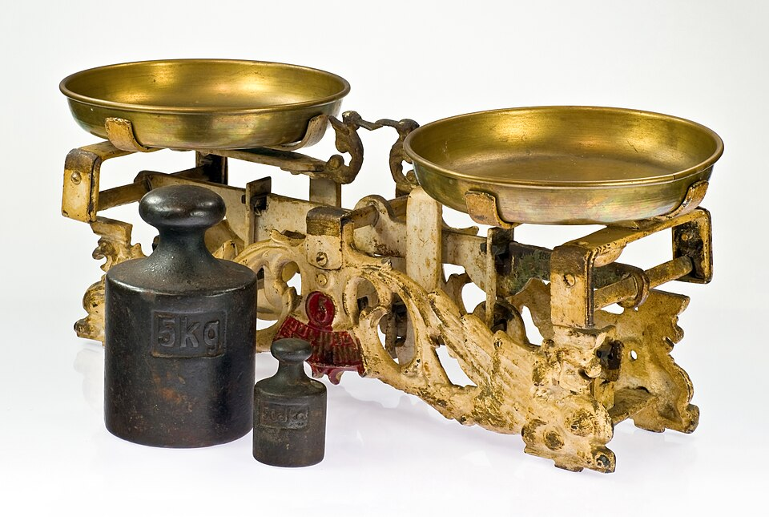
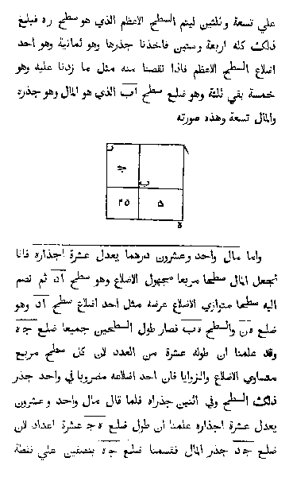

5x − 7 = 3x + 11 → x = 9
(2/3)x + 5 = 11 → x = 9
x² = 49 → x = 7 or x = −7
Those three lines are algebraic equations being solved at honors level — and they are the stars of this lesson. Right now, symbols like x² and (2/3)x might look a little mysterious. That's okay! By the end of this lesson, you'll crack equations with fractions, negative numbers, x's on both sides, parentheses, exponents, and even pairs of equations at once — no guessing needed, ever.
Why do people care? Because equations are how the world asks math questions. How many game tokens can you buy with $17? When will two racing cars be tied? What side length gives a square garden an area of 64 square meters? Every one of these turns into an equation — and once you know the Golden Rule, they all crack open like nuts.
In this lesson, you will:
- 1.Learn what an equation really is, and the algebra words: term, coefficient, constant
- 2.Learn what a solution is — and how to verify it like a professional
- 3.Learn the Golden Rule of algebra, with negative numbers and fractions in the mix
- 4.Solve multi-step equations by unwrapping them in reverse order
- 5.Master the distributive property, combining like terms, and factoring
- 6.Tame equations with x on both sides — including the two sneaky special cases
- 7.Use exponent laws and meet your first quadratic equations
- 8.Read function notation f(x) and run function machines backwards
- 9.Solve inequalities — and learn the famous flip rule
- 10.Solve systems of two equations with two variables
- 11.Learn the common mistakes so you never make them
- 12.Practice with 100 problems at the end!
How to use this lesson: Read the lessons in order — each one is built from the one before it. Every worked example shows every single step, with a short reason for each move. Take your time, and try every Your Turn box with a pencil and paper before peeking at the answer. Ready? Let's go!
📸 Pictures

A balance scale stays level only when both sides weigh the same, just like the two sides of an equation. That's the Golden Rule of algebra! See source ↓

A printed page from an 1831 edition of al-Khwarizmi's famous book about solving equations, which he wrote in Baghdad around 820 AD. The word "algebra" comes from "al-jabr" in its title! See source ↓
🗺️ Your lesson map
What Is an Equation? 🧩Lesson 2
The Mystery Letter — Solutions and Verifying 🎯Lesson 3
The Golden Rule — With Negatives and Fractions 🔍Lesson 4
Multi-Step Equations — Unwrap in Reverse Order ⚡Lesson 5
The Distributive Property, Like Terms, and Factoring 🌟Lesson 6
x on Both Sides — and Two Sneaky Special Cases 🛠️Lesson 7
Exponent Laws — and Your First Quadratics 🎨Lesson 8
Function Notation f(x) — Machines You Can Run Backwards 🏗️Lesson 9
Inequalities — and the Famous Flip Rule 🧪Lesson 10
Systems — Two Equations, Two Mysteries ⚠️Lesson 11
Watch Out! Common Mistakes (Honors Edition) 🧠Lesson 12
Review — The Big Picture 🏋️Practice Problems
100 problems to try 🏆Quiz
Test yourself: new questions every time!
📚 Picture Sources
- Picture 1 · Balance scale IMGP9755. By Nikodem Nijaki. CC BY-SA 3.0. From Wikimedia Commons: https://commons.wikimedia.org/wiki/File:Balance_scale_IMGP9755.jpg
- Picture 2 · The Algebra of Mohammed ben Musa (Arabic). From al-Khwarizmi's book on algebra. Public domain. From Wikimedia Commons: https://commons.wikimedia.org/wiki/File:The_Algebra_of_Mohammed_ben_Musa_(Arabic).png

.png){kind=link}